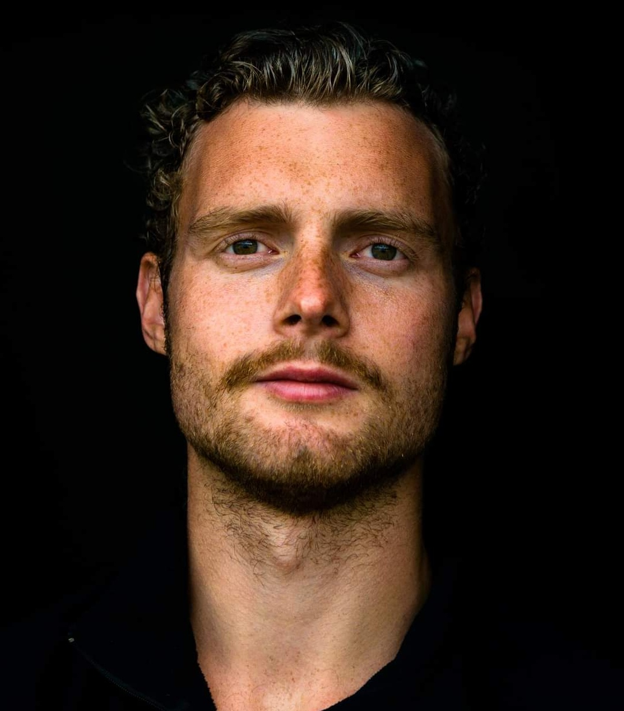

Jaran Gjerland Stenstad
# CV
## Profil
I mine 8 år som konstruktionsingeniør har min nysgerrighed drevet mig mod at forbedre, automatisere og digitalisere mine egne og andres processer og arbejdsgange. Min kombination av analytiske og kommunikative egenskaber, gør at jeg formår at finde og formidle dataindsigter forståelig og enkelt. Jeg har en god forretningsforståelse og trives i teams, da jeg værdsætter samarbejde og fælles idéudveksling.
## Erhvervserfaring
### 2015 – NU: Artelia Denmark, Buddinge
#### 2023-NU: Mathcad-Link - Udvikler
- Udviklet selvstendig C#-app til at forenkle dokumentation og reducere fejl i KS.
#### 2023-NU: LCA-platform - Udvikler
- Ansvarlig for Excel-dataplatform, standardisering af LCA-mængdeaflevering og sikring af korrekte CO2-udslipsberegninger ved brug af Power Quary, Piviot Tables og VBA.
#### 2022-NU: CO2 i projekteringen
- Ledelse af variantstudier og CO2-påvirkningsanalyse præsenteret i Power BI.
#### 2022-NU: Data i Artelia - Arbejdsgruppe
- Koncerngruppe med fokus på retningen for Artelias datastrategi.
#### 2018-2023: Livsvitenskabsbygget
- Fagansvarlig og bygherrerådgiver på 100.000 m2 byggeri, implementering af effektive dataprocesser.
#### 2016-2016: Scherfigs Have
- Ansvarlig for udvikling af Excel-dataplatform til analyse af kritiske lastkombinationer med brug af VBA.
## IT-værktøjer
Excel / VBA / Power BI / Power Query / Python / Grasshopper / Dynamo / Obsidian
## Uddannelse
- MSc Structural Engineering | Technical University of Denmark, 2013-2015
- BSc Structural Engineering | Oslo Metropolitan University, 2010-2013
- Journalism | Oslo Metropolitan University, 2009-2010
- Photography | Skjeberg Folk High School, 2007-2008
- Media and Communication | Drømtorp High School, 2003-2006
## Publikationer
- POAC 2015: New Harbor in Western Greenland. Field investigations and utilization of existing materials
## Frivilligt arbejde
#### 2022-NU: Mangelansvarlig Stavnsholthave Bofællesskab
- Udviklet system til indmelding af mangler med Google Forms og Google Scripts for boligbyggeri.
#### Øvrigt frivilligt arbejde
- Styremedlem i Tekna København (2014-2015)
- Næstformand / Formand i NITO-studentene ved HiOA (2011-2013)
- Læringsmiljøudvalget ved HiO (2012)
- Bestyrelsesmedlem i Ingeniører Uden Grænser (IUG) (Lokallag HiO) (2011-2012)
## Privat
Fritiden går primært til min rolle som far til tvillinger på 4 år. Jeg nyder også løbeture og leger ellers med selvgenereret data, som fx et træningsplot treningsappen Strava ikke levere.